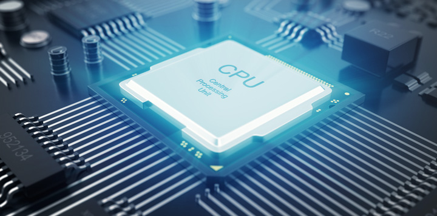

Fysieke Laag
De eerste laag is de fysieke laag; hierin komt alle hardware en randapparatuur.
Randapparatuur is hardware die niet behoort tot de centrale onderdelen die de computer draaiende houden,
maar de onderdelen die gebruikt worden om de computer geschikt te maken voor een bepaalde taak.
Onder hardware verstaan we alle fysieke onderdelen die het draaien van de computer mogelijk houden.
Moederbord & Bus
De CPU ofwel processor is het brein van je computer, en bevat allerlei onderdelen.
De CPU zit op het moederbord, wat alle onderdelen met elkaar verbindt.
Op het moederbord zit ook het RAM.
De CPU haalt gegevens uit het RAM door een signaal via de address bus te sturen, daarna via de enable line een signaal te sturen en hierna zal het RAM via de databus de gegevens doorsturen.
In de RAM zitten onder andere de instructies voor de CPU.
Verwerkingssnelheid & Kloksnelheid
De verwerkingssnelheid is de snelheid waarmee de processor de FDE-cyclus (fetch - decode - execute)kan uitvoeren. Deze wordt gemeten in mips wat staat voor Millions of Instructions per Second. De kloksnelheid is hoe vaak een puls wordt gegeven door de control unit. Dit wordt gemeten in Hz.
Permanent geheugen, RAM & ROM
Het permanent geheugen werkt zoals de naam zegt: het is een geheugen waarin je informatie permanent kan opslaan. Het is permanent in de zin dat de gegevens niet verwijderd worden als je ze opslaat. Het nadeel van het permanent geheugen is dat het relatief langzaam is en dus relatief lang duurt om je gegevens van je geheugen te halen
RAM staat voor Random Access Memory en heeft als voordeel dat je sneller bij je gegevens in de RAM kan dan bij de gegevens in het permanent geheugen. Het is wel een stuk kleiner dan je permanent geheugen en dus sla je er vooral de dingen op die de processor constant gebruikt. Dit zijn voornamelijk instructies en adressen. Wanneer je de computer uitzet wordt de RAM gewist.
ROM staat voor Read-Only Memory en kan alleen afgelezen worden en is niet wisbaar/overschrijfbaar. Hier staan vooral basisinstructies geschreven zoals de software voor het opstarten van je printer of het opstarten van je programma’s.
Randapparatuur
Randapparatuur is alles wat geen hardware is maar wel in de fysieke laag van de computer zit. Hier gaat het dan vooral om dingen die je steeds gebruikt, zoals je microfoon in je computer, of je toetsenbord, muis en speakers. Kort gezegd is het de hardware die niet centraal staat in de computer, maar een hulpmiddel is bij het verrichten van een specifieke taak.
CPU
De afkorting staat voor Central Processing Unit, en wordt vaak de processor genoemd. De CPU zorgt ervoor dat de basiscode wordt gecontroleerd en uitgevoerd. Hij voert de hele tijd dezelfde cyclus uit: fetch, decode, execute. De snelheid van de CPU bepaalt hoe vaak deze cyclus per seconde wordt uitgevoerd en dus hoeveel opdrachten hij per seconde kan verwerken. Om dit te timen is een klok nodig, die al in je processor zit ingebouwd. De CPU is eigenlijk het brein van je computer, en dus kan je computer niet zonder CPU.
De CPU behoort tot de kernapparatuur, wat bestaat uit het interne geheugen en de processor. Alle andere hardware is randapparatuur.

Site gemaakt door Taeke Stol